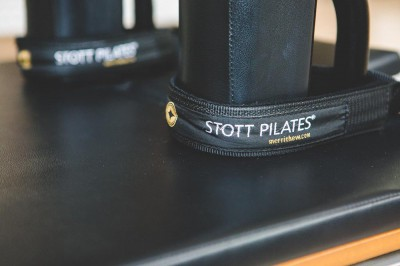
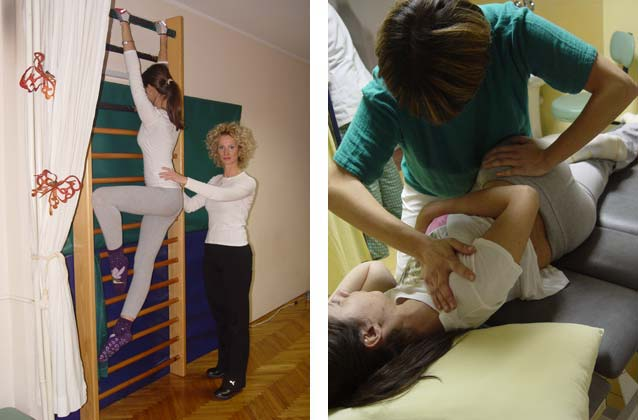
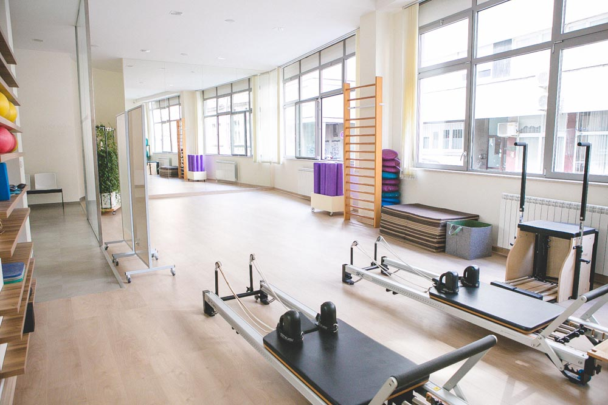
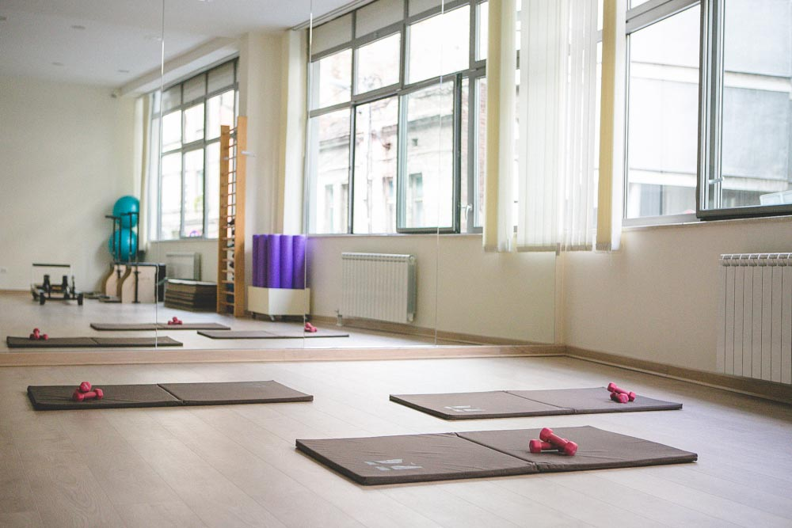
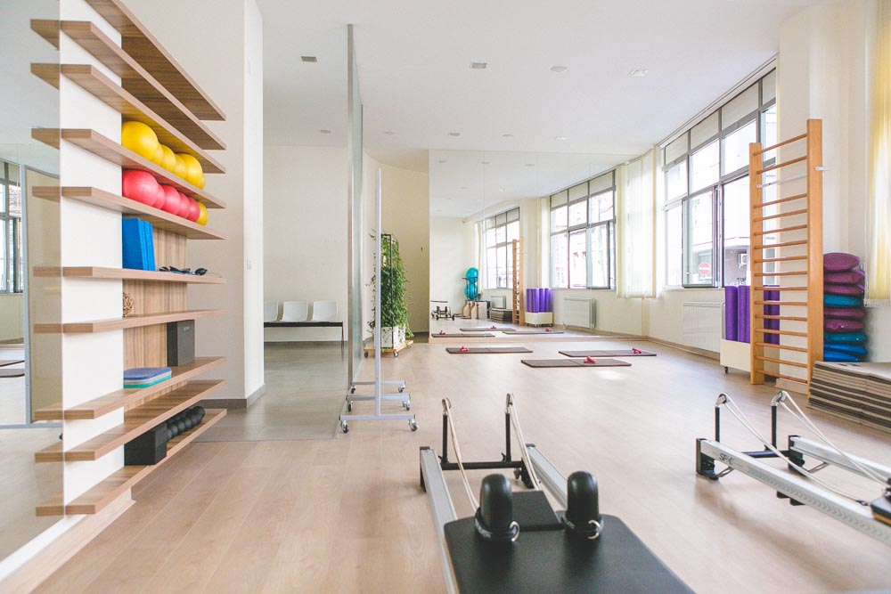
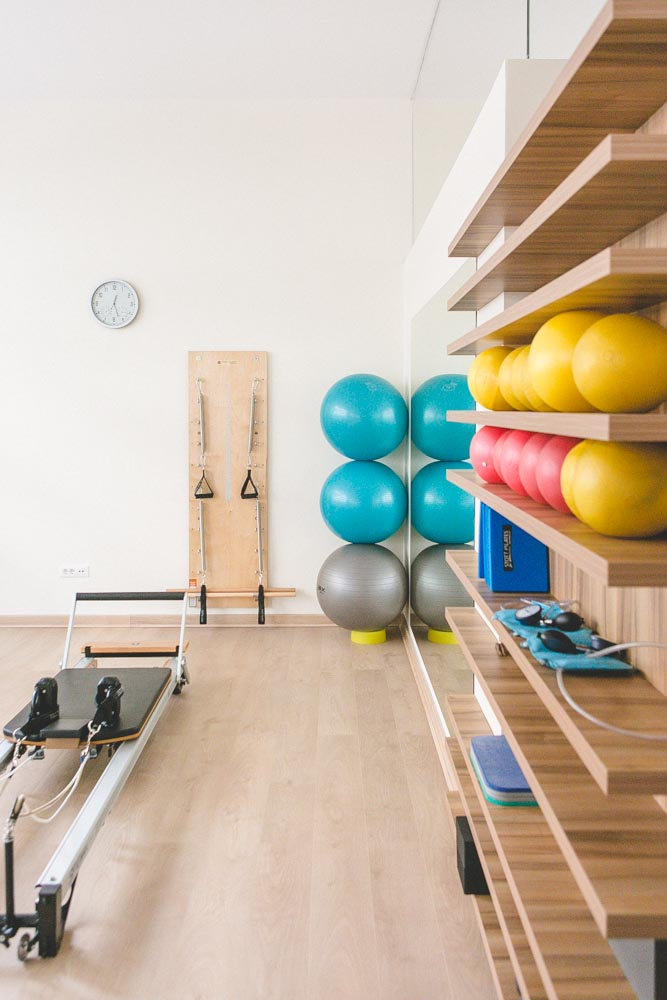
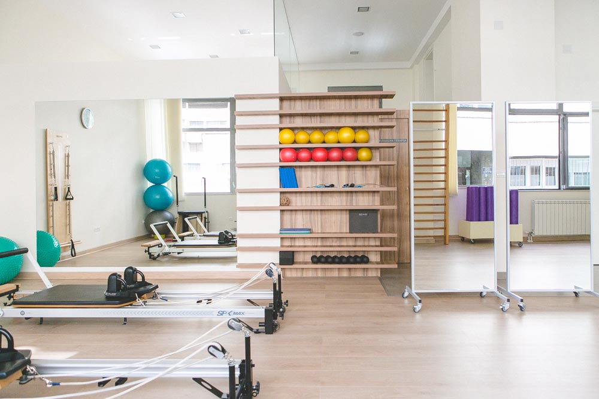
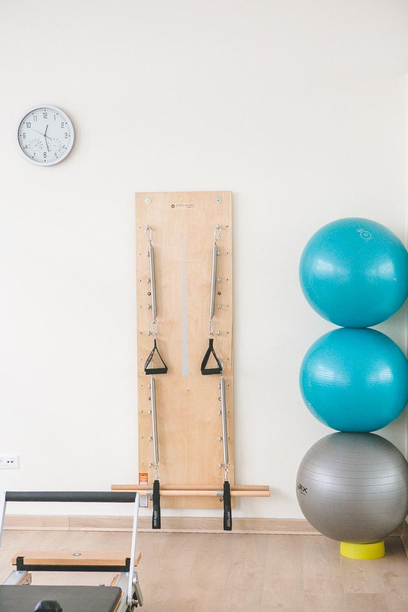
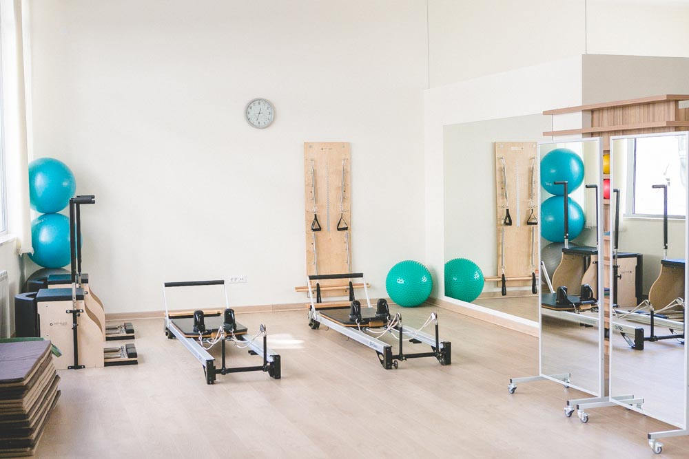

Od hiljadu načina da vežbate, treba izabrati pravi.
Dopustite našem lekaru da vas posavetuje.


Osnivač ordinacije „Leđa i vrat" je dr Vesna Stefanović, specijalista fizikalne medicine i rehabilitacije. Završila je medicinski fakultet u Beogradu 1996. godine, a specijalizirala fizikalnu medicinu i rehabilitaciju na VMA u Beogradu 2000. godine.
Sa više od 20 godina iskustva u lečenju i 11+ godina posvećenih vertebrološkoj rehabilitaciji, dr Stefanović je svoju edukaciju usavršavala širom sveta — od Bergena u Norveškoj, preko Njujorka i Atine, do Mančestera.
Završila je edukaciju iz primene manevarskih tehnika za lečenje BPPV-a, STOTT Pilates program, kineziterapijski program spinalne segmentne stabilizacije, Clinical Pilates, kao i KINETIKKONTROL dijagnostiku i lečenje pokretom.
„Samo pravilno izabrane vežbe leče." — Dr Vesna Stefanović
U našoj specijalističkoj ordinaciji nudimo sveobuhvatan pristup lečenju oboljenja kičmenog stuba i lokomotornog sistema.
Ultrazvuk, elektroterapija, laseroterapija, magnetoterapija, termoterapija — fizički agensi u službi vašeg oporavka.
Bezbolna tehnika lečenja kičme primenom precizno dozirane mehaničke sile za razmicanje pršljenova i oslobađanje od bola.
Ciljane vežbe za cervikalni deo kičme koje jačaju muskulaturu i smanjuju bolove u vratu.
Program vežbi za lumbalnu kičmu koji jača duboku muskulaturu i stabilizuje kičmeni stub.
Rana rehabilitacija koja pacijentu pomaže da se oslobodi bola kroz kontrolisane, precizne pokrete.
Savremeni pristup pilatesu baziran na principima fizikalne terapije i sporta, usavršen u Njujorku i Zagrebu.
Ciljane vežbe za ispravljanje skolioze, kifoze i drugih deformiteta kičmenog stuba.
Terapija pokretom — naučno dokazana metoda rehabilitacije i lečenja kroz kontrolisanu fizičku aktivnost.
Specijalizovani program vežbi i terapija za pacijente sa metaboličkim poremećajem kostiju.
Pristup nervnom sistemu kao celini za bolje razumevanje i lečenje bolnih stanja kičme.
Kompletnim lekarskim pregledom se ustanovljava dijagnoza i određuje individualni plan lečenja.
U ordinaciji „Leđa i vrat" verujemo da je svaki pacijent jedinstven. Zato ne primenjujemo šablonske programe — svaki plan lečenja je pažljivo prilagođen vašoj dijagnozi, fizičkoj kondiciji i ciljevima oporavka.
Kompletnim lekarskim pregledom utvrđujemo tačnu dijagnozu i stanje vašeg lokomotornog sistema.
Na osnovu dijagnoze kreiramo program terapije prilagođen isključivo vama i vašim potrebama.
Kroz kombinaciju fizikalne terapije i ciljanih vežbi, korak po korak, vraćamo vas u pokret bez bola.
Kontinuirano pratimo vaš napredak i prilagođavamo program za dugoročno zdravlje kičme.
Dve godine sam korisnik usluga ordinacije Ledja i Vrat. Zahvalna sam dr. Vesni i Milici na ogromnom znanju, stručnosti, posvećenosti, dobroti i razumevanju za sve pacijente ponaosob. Probleme koje sam imala sa ledjima, se kroz neinvazivne metode brzo prevazilaze. Pored terapija, vežbe dr Vesne su izuzetne, a njena posvećenost nama neprocenjiva.
Iako vežbam ceo svoj život, u ordinaciji Leđa i Vrat sam po prvi put naučila da vežbam svesno, fokusirano i pametno. Po prvi put sam shvatila da je osnova kvalitetnog vežbanja da imamo program prilagođen našim specifičnim potrebama.
Došao sam u ordinaciju sa bolovima u kičmi i teškim hodanjem duž desne noge. Brzim prijemom za pregled su ustanovili problem i odmah krenuli sa terapijom. Mogu reći da sam posle 3 terapije umanjio bol i povećao mobilnost desne noge. Sa velikim profesionalizmom i stručnošću su pristupili mom problemu.
Iako ne pripadam starijoj populaciji, zbog lošeg stila života, neaktivnosti i dugog sedenja kako na poslu tako i kod kuće, došla sam u situaciju da „osećam" kičmu kad dugo ne menjam položaj. To je bio prvi znak da nešto nije u redu. Zahvaljujući ordinaciji Leđa i vrat, danas se osećam potpuno drugačije.
Pročitajte još iskustava na našem Google i Facebook profilu.







Pogledajte naše video snimke vežbi, savete za zdravlje kičme i najnovije informacije o terapijama.
Pozovite nas ili popunite kontakt formu i javićemo vam se u najkraćem roku.
Rado ćemo odgovoriti na sva vaša pitanja i pomoći vam da zakažete pregled.
Stojana Protića 48
11000 Beograd, Srbija
Pon — Čet: 14:00 — 20:00
Petak: 11:00 — 16:00
Sub — Ned: zatvoreno